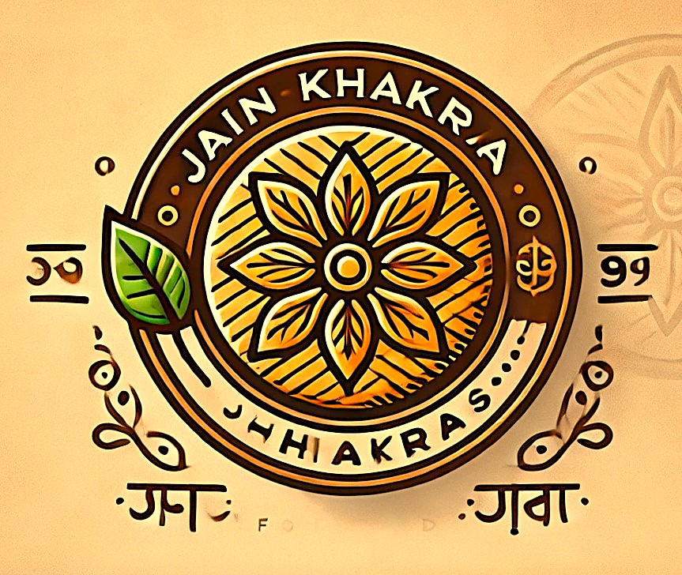

Tikhi Mugdi Khakra – The Perfect Spicy & Crispy Khichdi Snack
Experience the bold and fiery flavors of Gujarat with our Tikhi Mugdi Khakra, a uniquely crispy and flavorful snack made from nutritious khichdi instead of wheat,
offering a wholesome and satisfying crunch. Infused with a spicy blend of traditional Indian masalas, this khakra is handcrafted and slow-roasted to golden perfection,
ensuring a deliciously crispy texture in every bite.
Made from a rich mix of rice and lentils, khichdi provides a light yet nutrient-packed base, making this khakra a healthier and protein-rich alternative to regular
snacks. The fiery taste of red chili, cumin, black pepper, turmeric, and other aromatic spices gives it a bold and zesty kick, making it the perfect choice for spice
lovers. Unlike fried snacks, Tikhi Mugdi Khakra is a guilt-free indulgence, offering both taste and health benefits in every bite.
Enjoy it with chai, buttermilk, pickles, or chutneys, or simply relish it on its own—its spicy, crispy, and light texture makes it an ideal snack for any time of the
day. Whether at home, work, or on the go, this travel-friendly, preservative-free khakra ensures you always have a crunchy and flavorful treat at hand.
If you love spicy, crispy snacks with a twist of traditional flavors, our Tikhi Mugdi Khakra is a must-try! Authentic, bold, and irresistibly delicious!
